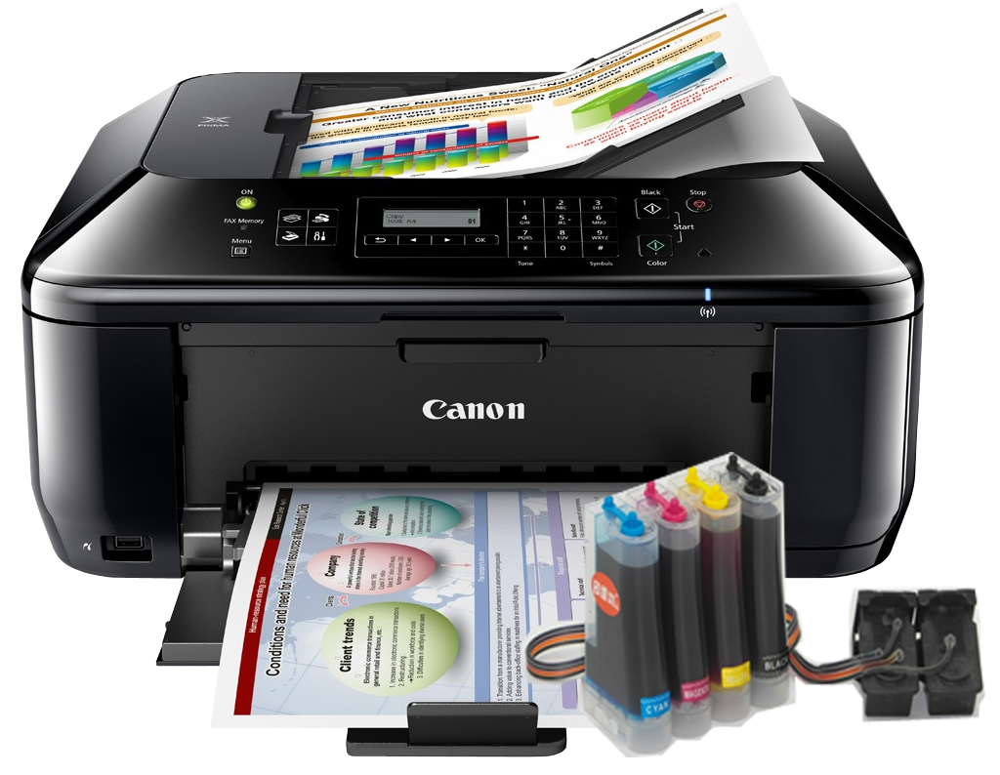

¿Que es una impresora?
Funciones


Una impresora monocromática es una impresora que imprime solo en blanco y negro. Las impresoras monocromáticas solo necesitan un cartucho de impresora negro para imprimir. Son perfectas para las pequeñas empresas, ideales para imprimir un gran volumen de documentos, con bastante frecuencia y que no requieren de tinta a color. Por ejemplo, cartas a nombres de la empresa, notas o documentos de oficina y facturas.

Este tipo de impresoras son muy populares por imprimir muy rápido y a una excelente calidad. Se caracterizan por poder imprimir en color, disponen de un tóner de cada color y además, pueden imprimir documentos en monocromo. Muy útiles para las empresas o negocios que necesitan imprimir tanto documentos a color, como en blanco y negro.

Estos equipos multifunción son una de las impresoras profesionales más utilizadas y demandadas por los negocios, tanto PYMES como grandes empresas. Esto es gracias a su amplio abanico de funciones, permite imprimir, tanto a color como en monocromo, escanear, digitalizar documentos e incluso fotocopiar.

Los equipos 3D han revolucionado el concepto de impresión, ya que permiten imprimir todo tipo de objetos a partir de un diseño. Las aplicaciones son múltiples: desde el campo de la medicina, con la construcción de prótesis y otros elementos similares, a los sectores industriales que requieren piezas específicas para su funcionamiento.

El driver trabaja como un traductor entre el dispositivo y los programas que lo utilizan. Cada
impresora tiene su propio sistema de comandos especializados que solo es conocido por su driver.
La mayoría de los programas acceden a la impresora usando comandos genéricos, sin embargo el
driver acepta los comandos genéricos y los traduce para comandos especializados que la impresora
puede entender.
Los controladores de impresión también son recursos de código independientes, sin embargo, en
general, son mucho más complicados que la extensión promedio o el panel de control.
Como los programas son actualizados frecuentemente, es necesario descargar los drivers más recientes para mantener el equipo actualizado. Las actualizaciones son lanzadas, muchas veces, para mejorar el rendimiento de la impresora o añadir nuevos recursos. Otra ventaja de la actualización de drivers es que acostumbran corregir errores y fallos en el uso del dispositivo.